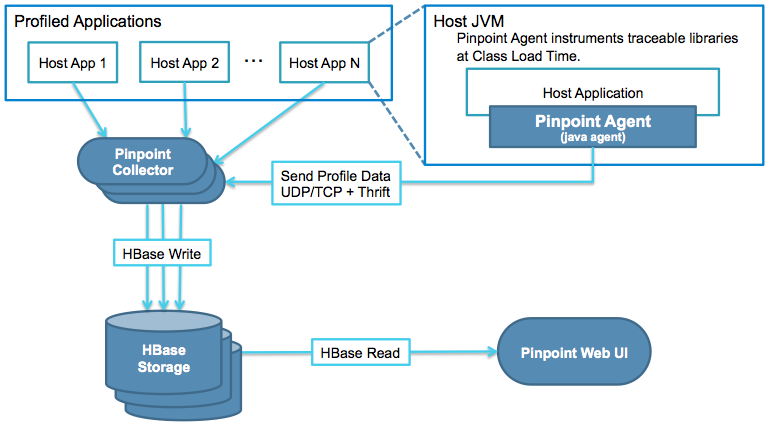

架构图

单机模式安装
准备安装包：
- Hbase
- hbase-2.1.5-bin.tar.gz
- hbase-create.hbase
下载地址：http://apache.fayea.com/hbase/
wget http://apache.fayea.com/hbase/2.1.5/hbase-2.1.5-bin.tar.gz
https://github.com/naver/pinpoint/tree/master/hbase/scripts/hbase-create.hbase
- pinpoint
- pinpoint-collector-1.8.4.war
- pinpoint-web-1.8.4.war
- pinpoint-agent-1.8.4.tar.gz
下载地址：https://github.com/naver/pinpoint/releases
安装Hbase
1、解压hbase-2.1.5-bin.tar.gz
1 | tar xf hbase-2.1.5-bin.tar.gz |
2、启动
1 | cd hbase-2.1.5/bin |
需要jdk8版本，手动指定jdk配置：
cd hbase-2.1.5/conf
vim hbase-env.sh
增加export JAVA_HOME=/export/software/jdk1.8.0_20/
保存后启动
3、初始化脚本
1 | ./hbase shell /home/ssh/pinpoint/hbase-create.hbase |
4、web访问
http://127.0.0.1:16010/
安装pinpoint-collector
解压war包到tomcat下
1 | unzip pinpoint-collector-1.8.4.war -d /home/ssh/pinpoint/tomcat-collector/webapps/ROOT |
安装pinpoint-web
解压war包到tomcat下（端口号28080）
1 | unzip pinpoint-web-1.8.4.war -d /home/ssh/pinpoint/tomcat-web/webapps/ROOT |
注意修改tomcat端口号
web访问：http://127.0.0.1:28080/
安装pinpoint-agent
tomcat启动的应用
在tomcat bin下的catalina.sh增加配置1
2
3CATALINA_OPTS="$CATALINA_OPTS -javaagent:/export/software/pinpoint/agent/pinpoint-bootstrap-1.8.4.jar"
CATALINA_OPTS="$CATALINA_OPTS -Dpinpoint.agentId=settlment1"
CATALINA_OPTS="$CATALINA_OPTS -Dpinpoint.applicationName=settlement"springboot启动的应用
jar启动方式为：1
nohup java -javaagent:/home/ssh/software/pinpoint/agent/pinpoint-bootstrap-1.8.4.jar -Dpinpoint.applicationName=settlement -Dpinpoint.agentId=settlement1 -jar settlement-latest.jar >/dev/null 2>&1 &
使用手册
https://blog.csdn.net/xvshu/article/details/79866237